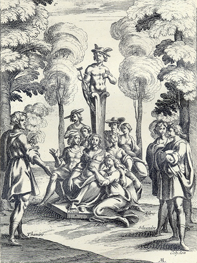
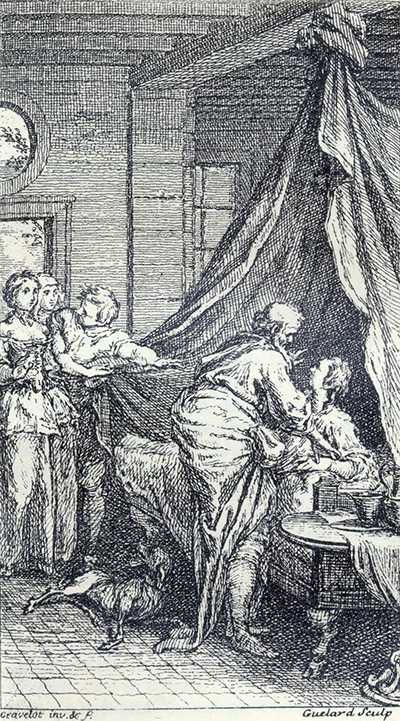

L'Astrée
d'Honoré d'Urfé
Deuxième partie
Livre 1

Gravure signée M(ichel Lasne)
Autour du terme de Mercure, Léonide, Paris, Astrée, Diane, Silvandre et d'autres bergers
écoutent l'histoire de Célidée, Thamire et Calidon (II, 1, 32)
L'AstréeII, 1. Édition Vaganay**, 1925Gravure signée M(ichel Lasne)
Autour du terme de Mercure, Léonide, Paris, Astrée, Diane, Silvandre et d'autres bergers
écoutent l'histoire de Célidée, Thamire et Calidon (II, 1, 32)
(Voir Illustrations)

Gravure signée Gravelot et Guélard
Un mire se penche sur Calidon malade,
tandis que Thamire engage Célidée à s'approcher (II, 1, 48)
L'AstréeII, 1. Édition Vaganay**, 1925Gravure signée Gravelot et Guélard
Un mire se penche sur Calidon malade,
tandis que Thamire engage Célidée à s'approcher (II, 1, 48)
(Voir Illustrations)
Édition de 1610, 1.
Édition de Vaganay, p. 7.
Écho
Stances.

Fille de l'air qui ne saurais rien taire,
De ces rochers hôtesse solitaire,
Où vont les cris que je vais émouvant ? - Au vent.
Et quel crois-tu que ce cruel martyre,
Que plein d'amour mon cœur va concevant,
Devienne enfin aux maux que je soupire ? -
Pire.
II.
Que ferait donc cet œil qui me désarme
Par sa douceur de toute sorte d'arme,
Et qui promet m'aimer infiniment ? -
Il ment. Mais s'il est vrai qu'il mente, quel remède Nous faudra-t-il pour sortir promptement De cet abus qui, trompeur, nous possède ? -
Cède. III. Comment ? céder un tel bien à quelque autre Qu'Amour ordonne en effet qu'il soit nôtre ! Qui plus que moi voit-elle volontiers ?
- Un tiers. Un tiers ? Écho, c'est un cruel langage ; Mais s'il est vrai qu'elle aime mieux un tiers, Au lieu d'amour, qu'aurait un grand courage ? -
Rage. IV. Nymphe, qui sens dedans ces roches creuses Quel est le mal des peines amoureuses, N'aurai-je donc jamais allégement ?
- Je mens. Comment, Écho, n'est-ce point un blasphème De t'accuser et dire que tu mens ? Ce que j'entends est-ce bien ta voix même ?
- Aime.
V.
C'est bien ta voix qui frappe mes oreilles :
Mais ce secret, Nymphe qui me conseilles,
L'as-tu, dis-moi, de ma Diane ouï ?
- Oui.
Mais de l'aimer, hélas ! c'est peu de chose,
Si d'elle aimé, d'elle je ne jouis
Pour un tel heur qu'est-ce qu'on me propose ?
Mais de l'aimer, hélas ! c'est peu de chose,
Si d'elle aimé, d'elle je ne jouis
Pour un tel heur qu'est-ce qu'on me propose ?
- Ose.
VI.
Le Ciel noirci de tempête et d'orage
Ne peut d'effroi m'abattre le courage.
Mon cœur ne craint tous ces étonnements.
VI.
Le Ciel noirci de tempête et d'orage
Ne peut d'effroi m'abattre le courage.
Mon cœur ne craint tous ces étonnements.
- Ne mens.
Je ne mens
J'apprends d'amour ces beaux enseignements.
Faut-il bien plus pour un si grand mystère ? -
Je ne mens
η point, ni ne suis téméraire,J'apprends d'amour ces beaux enseignements.
Faut-il bien plus pour un si grand mystère ? -
Taire.
VII.
Je me tairai, plutôt ma voix pressée
Soupirera ma mort que ma pensée,
Amant secret comme amant valeureux.
Heureux cent fois aimé de cette belle.
Mais d'où sais-tu que son cœur généreux
Sera vaincu si je lui suis fidèle ? -
VII.
Je me tairai, plutôt ma voix pressée
Soupirera ma mort que ma pensée,
Amant secret comme amant valeureux.
- Heureux.Heureux cent fois aimé de cette belle.
Mais d'où sais-tu que son cœur généreux
Sera vaincu si je lui suis fidèle ? -
D'elle.CONTRE LA JALOUSIE.
Ou ses flèches ne sont en nos cœurs adressées,
Ou bien au lieu d'Amour nous blessent de dédain.
Ou bien s'il fait aimer, Aimer c'est autre chose
Que ce n'était jadis, et les lois qu'il propose
Sont contraires aux lois qu'il nous donnait à tous :
Car aimer et haïr, c'est maintenant le même,
Puisque pour bien aimer il faut être jaloux.
Que si l'on aime ainsi, je ne veux plus qu'on m'aime.
après une grande révérence, il commença de parler ainsi :
HISTOIRE.
ET CALIDON.
D'UNE JEUNE BEAUTÉ.
Amour, ou rends son cœur aussi doux que ses yeux,
Ou nos yeux ou nos cœurs insensibles pour elle.

Liminaires

Livre 2
Référence électronique :
document.write('"'+document.title.substr(0, document.title.indexOf("-")-1)+'". '+"Dernière mise à jour : "+ExtractDate(document.lastModified)+".")Deux visages de L'Astrée.
©2005-2020 E. Henein.
URL :
var today = new Date();
document.write(document.URL +
"<br>Consulté le : " + today.toLocaleDateString("fr-FR") + ".");
var _gaq = _gaq || [];
_gaq.push(['_setAccount', 'UA-19288475-1']);
_gaq.push(['_trackPageview']);
(function() {
var ga = document.createElement('script'); ga.type = 'text/javascript'; ga.async = true;
ga.src = ('https:' == document.location.protocol ? 'https://ssl' : 'http://www') + '.google-analytics.com/ga.js';
var s = document.getElementsByTagName('script')[0]; s.parentNode.insertBefore(ga, s);
})();
Deux visages de L'Astrée.
©2005-2019 Eglal Henein. Creative Commons 4 
Édition critique de la première partie de L'Astrée (1607, 1621)
mise en ligne le 9 avril 2007
Édition critique de la deuxième partie de L'Astrée (1610, 1621)
mise en ligne le 10 octobre 2010
Édition critique de la troisième partie de L'Astrée (1619, 1621)
mise en ligne le 1er novembre 2014
Édition critique de la quatrième partie de L'Astrée (1624)
mise en ligne le 15 janvier 2019
document.write("Dernière mise à jour : "+ExtractDate(document.lastModified))